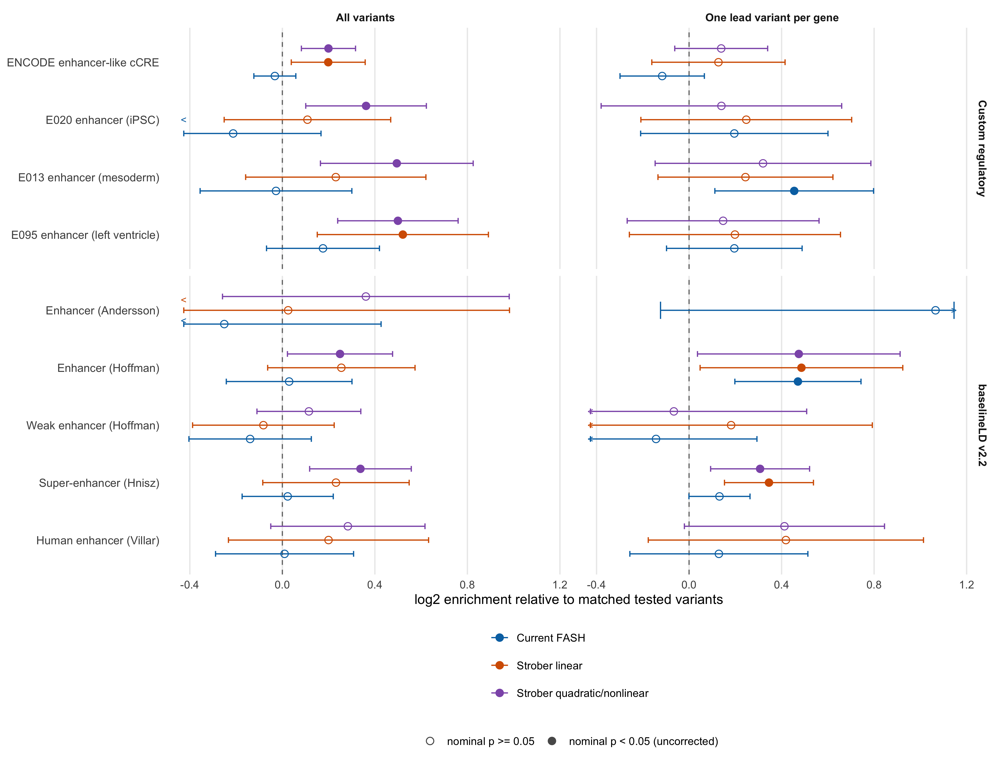
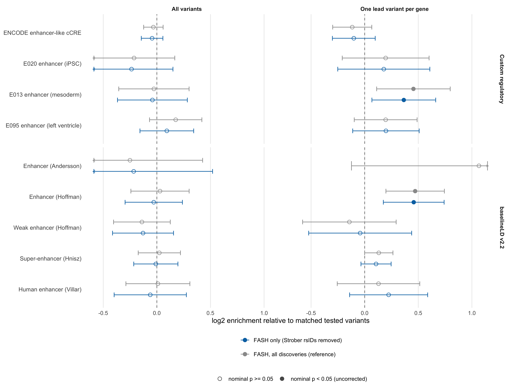

Last updated: 2026-08-21
Checks: 6 1
Knit directory: coderepo-local/
This reproducible R Markdown analysis was created with workflowr (version 1.7.2). The Checks tab describes the reproducibility checks that were applied when the results were created. The Past versions tab lists the development history.
The R Markdown file has unstaged changes. To know which version of
the R Markdown file created these results, you’ll want to first commit
it to the Git repo. If you’re still working on the analysis, you can
ignore this warning. When you’re finished, you can run
wflow_publish to commit the R Markdown file and build the
HTML.
Great job! The global environment was empty. Objects defined in the global environment can affect the analysis in your R Markdown file in unknown ways. For reproduciblity it’s best to always run the code in an empty environment.
The command set.seed(20251109) was run prior to running
the code in the R Markdown file. Setting a seed ensures that any results
that rely on randomness, e.g. subsampling or permutations, are
reproducible.
Great job! Recording the operating system, R version, and package versions is critical for reproducibility.
Nice! There were no cached chunks for this analysis, so you can be confident that you successfully produced the results during this run.
Great job! Using relative paths to the files within your workflowr project makes it easier to run your code on other machines.
Great! You are using Git for version control. Tracking code development and connecting the code version to the results is critical for reproducibility.
The results in this page were generated with repository version c87957a. See the Past versions tab to see a history of the changes made to the R Markdown and HTML files.
Note that you need to be careful to ensure that all relevant files for
the analysis have been committed to Git prior to generating the results
(you can use wflow_publish or
wflow_git_commit). workflowr only checks the R Markdown
file, but you know if there are other scripts or data files that it
depends on. Below is the status of the Git repository when the results
were generated:
Ignored files:
Ignored: .DS_Store
Ignored: .Rhistory
Ignored: .Rproj.user/
Ignored: Rplots.pdf
Ignored: analysis/.DS_Store
Ignored: analysis/.Rhistory
Ignored: code/.DS_Store
Ignored: code/.Rhistory
Ignored: code/revision_simulations/.DS_Store
Ignored: data/appendixB/
Ignored: data/dynamic_eQTL_real/
Ignored: data/revision_simulations/
Ignored: data/toy_example/
Ignored: output/dynamic_eQTL_real/
Ignored: output/pdf/
Ignored: output/playwright/
Ignored: output/revision_simulations/
Untracked files:
Untracked: analysis/revision_internal_evaluation_grid_mc_sensitivity.rmd
Untracked: analysis/revision_internal_evaluation_grid_mc_sensitivity_middle_4_11.rmd
Untracked: analysis/revision_internal_fash_cl_manuscript_impact.rmd
Untracked: analysis/revision_internal_fash_discovery_variant_count.rmd
Untracked: analysis/revision_internal_fash_linear_real_data_ablation.rmd
Untracked: analysis/revision_internal_fashr_correlated_observation_model.rmd
Untracked: analysis/revision_internal_matched_fash_linear_real_data.rmd
Untracked: analysis/revision_internal_r1_normality_assumption.rmd
Untracked: analysis/revision_internal_small_m_clean_working_null_sensitivity.rmd
Untracked: analysis/revision_internal_small_m_matched_null_eb_sensitivity.rmd
Untracked: analysis/revision_internal_twenty_variant_per_gene_refit.rmd
Untracked: apps/
Untracked: code/02_dyn_lfsr.R
Untracked: code/02_dyn_lfsr.sbatch
Untracked: code/revision_simulations/internal/covariance_estimation/run_design_propagated_null_correlation.R
Untracked: code/revision_simulations/internal/covariance_estimation/run_multigene_null_beta_covariance_exploration.R
Untracked: code/revision_simulations/internal/early_window_sensitivity/
Untracked: code/revision_simulations/internal/evaluation_grid_sensitivity/
Untracked: code/revision_simulations/internal/fash_cl_manuscript_impact/
Untracked: code/revision_simulations/internal/fash_discovery_variant_count/
Untracked: code/revision_simulations/internal/fash_linear_real_data_ablation/
Untracked: code/revision_simulations/internal/matched_fash_linear_real_data/
Untracked: code/revision_simulations/internal/r0_linear_iwp_power_mechanism/
Untracked: code/revision_simulations/internal/r0_linear_summary_statistic/
Untracked: code/revision_simulations/internal/r1_known_truth_genotype_permutation/
Untracked: code/revision_simulations/internal/r1_linear_truth_composition/
Untracked: code/revision_simulations/internal/r1_normality_assumption/
Untracked: code/revision_simulations/internal/residual_correlation_fash/
Untracked: code/revision_simulations/internal/selected_signal_genotype_permutation/
Untracked: code/revision_simulations/r5_one_variant_per_gene/
Untracked: code/revision_simulations/shared/build_real_genotype_one_per_gene_cache.R
Untracked: code/revision_simulations/shared/real_genotype_one_per_gene.R
Untracked: code/revision_simulations/shared/test_linear_mixture_fash.R
Untracked: code/revision_simulations/shared/test_real_genotype_one_per_gene.R
Untracked: code/revision_simulations/shared/validate_r1_r2_linear_mixture_pairing.R
Untracked: code/revision_simulations/shared/validate_r1_r2_real_genotype_pairing.R
Untracked: figure/
Unstaged changes:
Modified: analysis/dynamic_eQTL_real.rmd
Modified: analysis/index.Rmd
Modified: analysis/nonlinear_dynamic_eQTL_real.Rmd
Modified: analysis/revision_balanced_variant_thinning.rmd
Modified: analysis/revision_combined_spiky_genotype_simulation.rmd
Modified: analysis/revision_enhancer_enrichment.rmd
Modified: analysis/revision_functional_testing_simulation.rmd
Modified: analysis/revision_genotype_level_simulation.rmd
Modified: code/revision_simulations/README.md
Modified: code/revision_simulations/internal/covariance_estimation/run_global_pca_factor_visualization.R
Modified: code/revision_simulations/internal/fash_strober_enhancer_comparison/enrichment_api.R
Modified: code/revision_simulations/internal/fash_strober_enhancer_comparison/reporting.R
Modified: code/revision_simulations/internal/fash_strober_enhancer_comparison/run_fash_strober_enhancer_comparison.R
Modified: code/revision_simulations/r1_random_bspline/reporting.R
Modified: code/revision_simulations/r1_random_bspline/run_random_bspline_mc_replication.R
Modified: code/revision_simulations/r2_spiky_transient/reporting.R
Modified: code/revision_simulations/r2_spiky_transient/run_combined_spiky_genotype_simulation.R
Modified: code/revision_simulations/r2_spiky_transient/run_spiky_transient_mc_replication.R
Modified: code/revision_simulations/r3_functional_testing/reporting.R
Modified: code/revision_simulations/r3_functional_testing/run_matched_functional_testing_mc_replication.R
Modified: code/revision_simulations/shared/simulation_functions.R
Note that any generated files, e.g. HTML, png, CSS, etc., are not included in this status report because it is ok for generated content to have uncommitted changes.
These are the previous versions of the repository in which changes were
made to the R Markdown
(analysis/revision_enhancer_enrichment.rmd) and HTML
(docs/revision_enhancer_enrichment.html) files. If you’ve
configured a remote Git repository (see ?wflow_git_remote),
click on the hyperlinks in the table below to view the files as they
were in that past version.
| File | Version | Author | Date | Message |
|---|---|---|---|---|
| Rmd | c87957a | Ziang Zhang | 2026-08-10 | Add revision analyses: R1-R6 reviewer-facing pages and internal studies |
| html | c87957a | Ziang Zhang | 2026-08-10 | Add revision analyses: R1-R6 reviewer-facing pages and internal studies |
Do the gene-variant pairs that FASH discovers, and Strober’s linear and quadratic/nonlinear analyses do not, carry independent regulatory evidence?
| Section | What is being tested |
|---|---|
| 1 | FASH versus Strober linear versus Strober quadratic/nonlinear |
| 2 | FASH discoveries at variants Strober never discovered |
Both figures show the same two selection strategies side by side:
all discovered variants and one lead variant
per gene. FASH uses cumulative lfdr at FDR 0.05 after the BF
correction; Strober uses its reported eFDR 0.05. The existing Strober
non_linear_dynamic_eqtls_5_pc.txt result is labelled
quadratic/nonlinear throughout.
FASH-only, variant level: an rsID is not FASH-only if it appears in any Strober linear or quadratic discovery, regardless of which gene it was paired with. This is the conservative reading of “new evidence”, because an enhancer annotation is a property of a variant rather than of a pair. For the lead column, the per-gene lowest-lfdr variant is chosen first and the exclusion applied afterwards, so every variant shown is genuinely FASH’s top call for its gene; a gene whose best variant Strober also found drops out rather than falling back to a weaker one.
render_scrollable_table(
discovery_table,
caption = "Table 1. Discovery sets used in the enhancer-enrichment analysis.",
align = "rlllrrr",
minimum_width = "1120px"
)| Section | Set ID | Method | Selection strategy | Gene-variant pairs | Unique variants | Unique genes |
|---|---|---|---|---|---|---|
| 1 | current_all | Current FASH | All variants | 9214 | 9148 | 1176 |
| 1 | current_lead | Current FASH | One lead variant per gene | 1176 | 1169 | 1176 |
| 1 | linear_all | Strober linear | All variants | 5404 | 5387 | 550 |
| 1 | linear_lead | Strober linear | One lead variant per gene | 550 | 548 | 550 |
| 1 | quadratic_all | Strober quadratic/nonlinear | All variants | 6824 | 6797 | 693 |
| 1 | quadratic_lead | Strober quadratic/nonlinear | One lead variant per gene | 693 | 690 | 693 |
| 2 | current_only_all | Current FASH | All variants | 8042 | 7981 | 1116 |
| 2 | current_only_lead | Current FASH | One lead variant per gene | 1035 | 1029 | 1035 |
Of the 9,148 variants FASH discovers, 1,167 were also discovered by Strober linear or quadratic/nonlinear and are removed, leaving 7,981 that only FASH found.
render_scrollable_table(
coverage_table,
caption = "Table 2. Annotation coverage for all eight discovery sets.",
align = "llllrrr",
minimum_width = "1240px"
)| Annotation system | Set ID | Method | Selection strategy | Original variants | Covered variants | Coverage |
|---|---|---|---|---|---|---|
| Custom regulatory | current_all | Current FASH | All variants | 9148 | 9148 | 100.0% |
| baselineLD v2.2 | current_all | Current FASH | All variants | 9148 | 7076 | 77.4% |
| Custom regulatory | current_lead | Current FASH | One lead variant per gene | 1169 | 1169 | 100.0% |
| baselineLD v2.2 | current_lead | Current FASH | One lead variant per gene | 1169 | 917 | 78.4% |
| Custom regulatory | linear_all | Strober linear | All variants | 5387 | 5387 | 100.0% |
| baselineLD v2.2 | linear_all | Strober linear | All variants | 5387 | 3976 | 73.8% |
| Custom regulatory | linear_lead | Strober linear | One lead variant per gene | 548 | 548 | 100.0% |
| baselineLD v2.2 | linear_lead | Strober linear | One lead variant per gene | 548 | 429 | 78.3% |
| Custom regulatory | quadratic_all | Strober quadratic/nonlinear | All variants | 6797 | 6797 | 100.0% |
| baselineLD v2.2 | quadratic_all | Strober quadratic/nonlinear | All variants | 6797 | 5056 | 74.4% |
| Custom regulatory | quadratic_lead | Strober quadratic/nonlinear | One lead variant per gene | 690 | 690 | 100.0% |
| baselineLD v2.2 | quadratic_lead | Strober quadratic/nonlinear | One lead variant per gene | 690 | 525 | 76.1% |
| Custom regulatory | current_only_all | Current FASH | All variants | 7981 | 7981 | 100.0% |
| baselineLD v2.2 | current_only_all | Current FASH | All variants | 7981 | 6115 | 76.6% |
| Custom regulatory | current_only_lead | Current FASH | One lead variant per gene | 1029 | 1029 | 100.0% |
| baselineLD v2.2 | current_only_lead | Current FASH | One lead variant per gene | 1029 | 805 | 78.2% |
plot_method_comparison("Current FASH")
Figure 1. Enhancer enrichment for current FASH, Strober linear, and Strober quadratic/nonlinear. Intervals are delete-one-autosome 95% intervals; filled points mark nominal p below 0.05 without multiplicity correction. Chevrons mark intervals extending beyond the plotted range; exact bounds are returned by compute_enrichment().
| Version | Author | Date |
|---|---|---|
| c87957a | Ziang Zhang | 2026-08-10 |
Under lead-per-gene selection the ordering reverses at the E013 mesoderm enhancer, where FASH holds the strongest estimate of the three methods: 1.37-fold (95% CI 1.08-1.74, nominal p = 0.0094, 92/1,169 variants), against 1.18-fold for Strober linear and 1.25-fold for Strober quadratic.
The grey series repeats the unfiltered FASH set from Section 1 so the effect of the exclusion is directly visible.
plot_fash_only()
Figure 2. Enhancer enrichment for FASH discoveries at variants absent from both Strober analyses, against the unfiltered FASH reference. Chevrons mark intervals extending beyond the plotted range; exact bounds are returned by compute_enrichment().
| Version | Author | Date |
|---|---|---|
| c87957a | Ziang Zhang | 2026-08-10 |
All variants (7,981 variants): every FASH discovery at a variant Strober never found. Here no enhancer annotation reaches nominal p < 0.05.
One lead variant per gene (1,029 variants): FASH’s lowest-lfdr variant for each gene, keeping only those Strober never found. A gene whose best variant Strober also discovered drops out rather than falling back to a weaker one, so 1,035 of FASH’s 1,176 genes survive. Here the enriched annotations are Enhancer (Hoffman) (baselineLD v2.2) at 1.37-fold, 95% CI 1.13-1.67, p = 0.0016, 94/805 variants; E013 enhancer (mesoderm) (Custom regulatory) at 1.29-fold, 95% CI 1.05-1.58, p = 0.016, 76/1,029 variants.
Exploratory, uncorrected. Fold enrichment, 95% intervals, and nominal p-values are reported for 69 estimable enhancer estimates across 8 variant sets and two annotation systems, with no multiplicity adjustment; the p-values are descriptive. The two annotation systems evaluate the same discoveries and are not independent replications. Each set has its own matched controls and the sets differ in size and membership, so a larger estimate for one method is not a formal test that it outperforms another - in particular, Strober’s higher all-variant enrichment must not be read that way.
Readout. FASH discoveries at variants Strober never found are enriched for mesoderm enhancers when one lead variant per gene is taken, and indistinguishable from the null when every discovered variant is counted. E013 is the hESC-derived CD56+ mesoderm enhancer set, the transitional state of this iPSC-to-cardiomyocyte differentiation, between the E020 starting state and the E095 terminal state. That observation was made after seeing the results and is not a pre-specified hypothesis.
Enough detail to reimplement the analysis from scratch. The How the enrichment is computed section below shows the same thing as four lines of code.
render_scrollable_table(
provenance_table,
caption = "Table 3. Provenance of the enhancer annotations.",
align = "llllllll",
minimum_width = "1560px",
escape = FALSE
)| Annotation system | Annotation | Source | Accession or record | Genome build | Repository | Download | Retrieved from |
|---|---|---|---|---|---|---|---|
| Custom regulatory | ENCODE cCRE enhancer-like | ENCODE candidate cis-regulatory elements (cell-type agnostic) | ENCFF788SJC | hg19 | encodeproject.org | ENCFF788SJC.bed.gz | |
| Custom regulatory | Roadmap E020 iPS-20b: Enhancer | NIH Roadmap 15-state ChromHMM coreMarks, iPS-20b | E020 | hg19 | egg2.wustl.edu/roadmap | E020_15_coreMarks_mnemonics.bed.gz | |
| Custom regulatory | Roadmap E013 hESC-derived CD56+ mesoderm: Enhancer | NIH Roadmap 15-state ChromHMM coreMarks, hESC-derived CD56+ mesoderm | E013 | hg19 | egg2.wustl.edu/roadmap | E013_15_coreMarks_mnemonics.bed.gz | |
| Custom regulatory | Roadmap E095 left ventricle: Enhancer | NIH Roadmap 15-state ChromHMM coreMarks, left ventricle | E095 | hg19 | egg2.wustl.edu/roadmap | E095_15_coreMarks_mnemonics.bed.gz | |
| baselineLD v2.2 | Enhancer_Andersson | baselineLD v2.2 binary annotation columns | Zenodo 10515792 | GRCh37/hg19 | zenodo.org (retrieved from Song Lab mirror) | baselineLD.{1..22}.annot.gz | Song Lab mirror |
| baselineLD v2.2 | Enhancer_Hoffman | baselineLD v2.2 binary annotation columns | Zenodo 10515792 | GRCh37/hg19 | zenodo.org (retrieved from Song Lab mirror) | baselineLD.{1..22}.annot.gz | Song Lab mirror |
| baselineLD v2.2 | WeakEnhancer_Hoffman | baselineLD v2.2 binary annotation columns | Zenodo 10515792 | GRCh37/hg19 | zenodo.org (retrieved from Song Lab mirror) | baselineLD.{1..22}.annot.gz | Song Lab mirror |
| baselineLD v2.2 | SuperEnhancer_Hnisz | baselineLD v2.2 binary annotation columns | Zenodo 10515792 | GRCh37/hg19 | zenodo.org (retrieved from Song Lab mirror) | baselineLD.{1..22}.annot.gz | Song Lab mirror |
| baselineLD v2.2 | Human_Enhancer_Villar | baselineLD v2.2 binary annotation columns | Zenodo 10515792 | GRCh37/hg19 | zenodo.org (retrieved from Song Lab mirror) | baselineLD.{1..22}.annot.gz | Song Lab mirror |
gene and exon
records only. Gene body is the gene interval; exons are
reduced to merge overlapping transcripts; introns are
setdiff(gene body, exon); promoters are TSS ± 2
kb; intergenic is the complement of gene body, not an
interval set.255,0,0 promoter-like,
255,205,0 enhancer-like,
0,176,240 CTCF-only. An unrecognised RGB is a hard
error.GenomicRanges::findOverlaps, giving a 745,867 × 29 logical
matrix. Four of those 29 columns are the pre-specified custom
enhancers.baselineLD v2.2 is used as published: its rows are the 1000G Phase 3 EUR SNP list, which is why only 557,405 of the 745,867 tested variants have a row. The enhancer definitions in both systems are ancestry-free genomic intervals; only baselineLD’s variant coverage is ancestry-dependent.
For each discovery set, every selected variant is matched to 5 non-selected tested variants drawn from the same stratum. Strata are the interaction of chromosome with decile bins of cohort MAF, log10 minimum target-gene TSS distance, log1p local tested-variant count within 1 Mb, and a coarsened tested-gene count (1, 2, 3-4, 5+). Matching is repeated over 100 fixed seeds beginning at 20,260,807, and control counts are pooled across seeds. For the baselineLD system both the selected set and the control pool are first restricted to baselineLD-covered variants, so numerator and denominator stay on the same footing.
With \(a\) selected variants overlapping an annotation out of \(n_{\text{sel}}\), and \(b\) control overlaps out of \(n_{\text{ctrl}}\) pooled across seeds:
\[\hat{\theta} = \log_2\!\left[\frac{a/n_{\text{sel}}}{b/n_{\text{ctrl}}}\right]\]
Uncertainty is a delete-one-chromosome block jackknife. For each autosome \(c\), recompute \(\hat{\theta}_{(c)}\) with every variant on \(c\) removed from both the selected and the control counts, then
\[\mathrm{se} = \sqrt{\frac{m-1}{m}\sum_{c}\left(\hat{\theta}_{(c)} - \bar{\theta}\right)^2}, \qquad m = 22\]
The reported interval is \(\hat{\theta} \pm 1.96\,\mathrm{se}\) on the log2 scale, displayed as folds; the nominal p-value is \(2\Phi(-|\hat{\theta}/\mathrm{se}|)\). Chromosome blocks absorb within-chromosome correlation, which is why these p-values are orders of magnitude more conservative than a Fisher test that assumes independent variants. An estimate is reported only when both the selected and the control overlap reach 10.
Known limitations of the interval. Only 22 jackknife blocks, so the standard error is itself noisy and the normal quantile is optimistic in the tails. Chromosomes differ greatly in size while the standard delete-one formula assumes equal blocks. The Monte Carlo variability of the 100 matching seeds is not propagated; controls are pooled and treated as fixed. The interval is symmetric in log2 and therefore asymmetric in fold space.
Stripped of bookkeeping, the analysis is three objects and one
function. The module enrichment_api.R
is written to make that visible:
source("code/revision_simulations/internal/fash_strober_enhancer_comparison/enrichment_api.R")
# 1. ANNOTATIONS - which variants belong to which group
annotations <- load_annotation_groups("custom") # or "baselineld"
# 2. INPUT - a variant set to test, and the background of all tested variants
background <- load_background() # 745,867 tested variants
sets <- load_variant_sets() # the eight published sets
# 3. OUTPUT - one enrichment score per set per annotation group
compute_enrichment(sets["current_only_lead"], background, annotations)compute_enrichment() takes any named
list of variant vectors, so swapping in your own sets needs no other
change:
my_sets <- list(
my_hits = readLines("my_variants.txt"),
fash_only = sets$current_only_lead,
strober_lin = sets$linear_lead
)
compute_enrichment(my_sets, background, annotations)The same function answers the question two ways, and the difference is the whole reason the matching machinery exists:
# Plain over-representation: rate in the set / rate in the background.
compute_enrichment(sets["current_all"], background, annotations,
controls = "background")
# Matched: each selected variant is compared against comparable variants drawn
# from the background, so the comparison is not confounded.
compute_enrichment(sets["current_all"], background, annotations,
controls = "matched")Discovered variants are systematically higher-MAF and closer to a TSS
than the average tested variant, and enhancers are themselves
TSS-proximal, so the plain comparison attributes some purely positional
signal to biology. For FASH’s all-variant set at the E095 enhancer the
plain fold is 1.22, while the matched fold is 1.13 at nominal
chromosome-jackknife p = 0.16. Every headline number on this page uses
controls = "matched".
The pre-specified enhancer panel is the default, but both systems carry more:
list_annotation_groups("custom") # 29 groups: GENCODE, ENCODE cCRE, Roadmap
list_annotation_groups("baselineld") # 83 binary baselineLD v2.2 annotations
load_annotation_groups("custom", groups = "GENCODE promoter +/-2 kb")enrichment_api.R is a readable front end to the same
audited matching engine the analysis uses, so it can drift. This check
recomputes all eight published sets through
compute_enrichment() and diffs them against the estimates
shown above:
Rscript --vanilla \
code/revision_simulations/internal/fash_strober_enhancer_comparison/enrichment_api.R \
--verifyRscript --vanilla \
code/revision_simulations/internal/variant_annotation_enrichment/download_variant_annotations.R
Rscript --vanilla \
code/revision_simulations/internal/variant_annotation_enrichment/run_variant_annotation_enrichment.RThe first downloads and checksums the five annotation sources; the
second rebuilds the variant universe and the 29-column annotation matrix
from them. Intermediate data stays under output/, which is
not tracked in git - the repository carries code, not data.
render_scrollable_table(
input_provenance,
caption = "Table 4. Provenance of every retained R6 analysis input.",
align = "lrlll",
minimum_width = "1360px"
)| path | byte_size | md5 | sha256 | modified_at |
|---|---|---|---|---|
| /Users/ziangzhang/Desktop/FASH/fash-revision/coderepo-local/output/dynamic_eQTL_real/fash_fit1_update.RData | 581123504 | 32736f109a93fbcdd82ed268eee07faf | 7f0ca9ab0fbeab89a13c83d2a0fb7c24195f7b5a5835f209399cf0e359001f50 | 2026-08-21 07:23:05 UTC |
| /Users/ziangzhang/Desktop/FASH/fash-revision/coderepo-local/data/dynamic_eQTL_real/strober_linear/linear_dynamic_eqtls_5_pc.txt | 63118432 | 0046a033a3c6e2e6096c3551702353da | 9f1f8a425022a52b9b27733509e2bf02398bf4a98c8503750b47ee3e3b7f1b47 | 2019-03-12 17:12:30 UTC |
| /Users/ziangzhang/Desktop/FASH/fash-revision/coderepo-local/data/dynamic_eQTL_real/strober_nonlinear/non_linear_dynamic_eqtls_5_pc.txt | 63148959 | dd38af583983ab6a670ac1ffa773bdee | 847628a4bd1fa57983c65b757fd3a0c74823a2d2ac49430b58d3f3a2d91fbd8d | 2019-03-12 17:12:38 UTC |
| /Users/ziangzhang/Desktop/FASH/fash-revision/coderepo-local/output/revision_simulations/internal/variant_annotation_enrichment/variant_matching_covariates.rds | 19645476 | 66ae877fa1e335392dd29e6c2be25295 | e44bc2712fe9d0702d5c74aba2e4b0a3ec0d5bd99e1589ffd56ce71469357ce7 | 2026-08-07 20:42:40 UTC |
| /Users/ziangzhang/Desktop/FASH/fash-revision/coderepo-local/output/revision_simulations/internal/variant_annotation_enrichment/variant_annotation_matrix.rds | 5549354 | 9bcddaa32023a2f3c7c8affedc8add14 | 60ef30e6dda18b334459824ef08d58b1d627d63e4a33dd6642946f2afd0603b6 | 2026-08-07 20:42:41 UTC |
| /Users/ziangzhang/Desktop/FASH/fash-revision/coderepo-local/output/revision_simulations/internal/baseline_ld_variant_enrichment/baseline_ld_binary_annotation_matrix.rds | 7542970 | 82e6af8db64d9c6a4fac263a6d3d6f78 | 9e85ba1b4f638769ba12ed8a00c010039e17c0a3e264bcdb413ad809d69a5abc | 2026-08-07 21:51:39 UTC |
| /Users/ziangzhang/Desktop/FASH/fash-revision/coderepo-local/code/revision_simulations/internal/fash_strober_enhancer_comparison/fash_strober_enhancer_helpers.R | 8561 | 8100838dab3748b03e88dfd3abe20a2a | a58f20cf7cca615bac26e7b6c14fbb3a2e2c2a638374335b651aa381930f4987 | 2026-08-10 04:41:45 UTC |
| /Users/ziangzhang/Desktop/FASH/fash-revision/coderepo-local/code/revision_simulations/internal/fash_strober_enhancer_comparison/run_fash_strober_enhancer_comparison.R | 26646 | ec3aa940c5d6c5550f4cc324c3f34b26 | 3ce3423da87291bc7ef63c8bf70230113a81ae8d44d9f189b11a1e366bf14641 | 2026-08-21 16:58:00 UTC |
| /Users/ziangzhang/Desktop/FASH/fash-revision/coderepo-local/code/revision_simulations/internal/variant_annotation_enrichment/variant_annotation_enrichment_helpers.R | 42396 | afd317f14ace80ff04c545b9c35da74f | 5884173b21aaeb50c8905d2164d24c264634fcf8f950cee5e647f724c2147719 | 2026-08-09 16:39:27 UTC |
Routine page builds read the retained fashr 0.1.43 cache at:
output/revision_simulations/internal/fash_strober_enhancer_comparison_fashr0143/
The earlier cache remains unchanged for historical comparison. The retained configuration records the corrected BF-updated fit SHA-256, exact package version and RemoteSha, matching seeds, control ratio, and input checksums.
Rscript --vanilla \
code/revision_simulations/internal/fash_strober_enhancer_comparison/test_fash_strober_enhancer_helpers.R
Rscript --vanilla \
code/revision_simulations/internal/fash_strober_enhancer_comparison/run_fash_strober_enhancer_comparison.R
Rscript --vanilla \
code/revision_simulations/internal/fash_strober_enhancer_comparison/enrichment_api.R \
--verify
Rscript --vanilla -e \
'workflowr::wflow_build("analysis/revision_enhancer_enrichment.rmd")'
sessionInfo()R version 4.5.1 (2025-06-13)
Platform: aarch64-apple-darwin20
Running under: macOS Sequoia 15.6.1
Matrix products: default
BLAS: /System/Library/Frameworks/Accelerate.framework/Versions/A/Frameworks/vecLib.framework/Versions/A/libBLAS.dylib
LAPACK: /Library/Frameworks/R.framework/Versions/4.5-arm64/Resources/lib/libRlapack.dylib; LAPACK version 3.12.1
locale:
[1] C.UTF-8/C.UTF-8/C.UTF-8/C/C.UTF-8/C.UTF-8
time zone: America/Chicago
tzcode source: internal
attached base packages:
[1] stats graphics grDevices utils datasets methods base
other attached packages:
[1] workflowr_1.7.2
loaded via a namespace (and not attached):
[1] gtable_0.3.6 jsonlite_2.0.0 dplyr_1.1.4 compiler_4.5.1
[5] promises_1.5.0 tidyselect_1.2.1 Rcpp_1.1.1-1.1 stringr_1.6.0
[9] git2r_0.36.2 dichromat_2.0-0.1 callr_3.7.6 later_1.4.4
[13] jquerylib_0.1.4 scales_1.4.0 yaml_2.3.12 fastmap_1.2.0
[17] ggplot2_4.0.3 R6_2.6.1 labeling_0.4.3 generics_0.1.4
[21] knitr_1.50 tibble_3.3.0 rprojroot_2.1.1 RColorBrewer_1.1-3
[25] bslib_0.9.0 pillar_1.11.1 rlang_1.2.0 cachem_1.1.0
[29] stringi_1.8.9 httpuv_1.6.16 xfun_0.55 S7_0.2.2
[33] getPass_0.2-4 fs_1.6.6 sass_0.4.10 otel_0.2.0
[37] cli_3.6.6 withr_3.0.3 magrittr_2.0.5 ps_1.9.1
[41] grid_4.5.1 digest_0.6.39 processx_3.8.6 rstudioapi_0.17.1
[45] lifecycle_1.0.5 vctrs_0.7.3 evaluate_1.0.5 glue_1.8.1
[49] farver_2.1.2 whisker_0.4.1 rmarkdown_2.30 httr_1.4.7
[53] tools_4.5.1 pkgconfig_2.0.3 htmltools_0.5.9